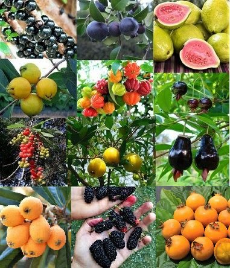
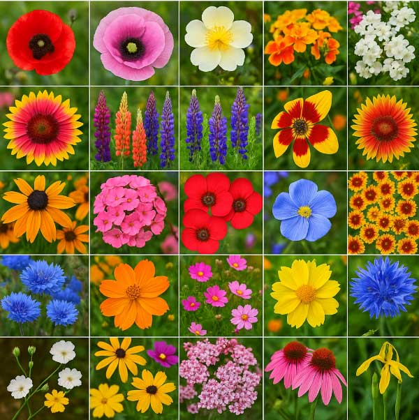
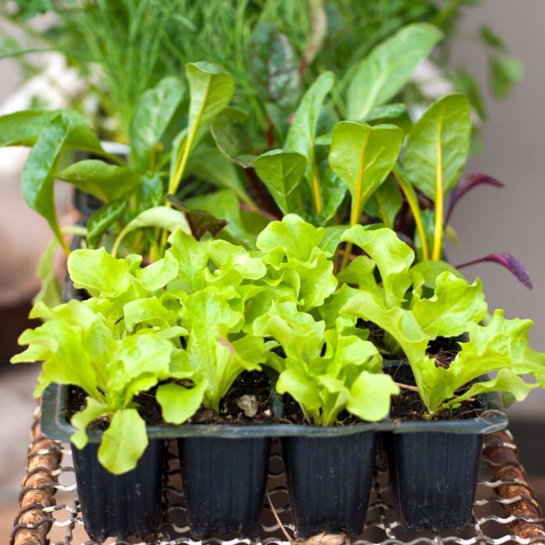

Nossas Mudas

Mudas Frutíferas
Perfeitas para pomares domésticos e produção sustentável de frutas.

Mudas Ornamentais
Beleza e elegância para jardins, áreas externas e paisagismo.

Mudas Hortaliças
Essenciais para uma dieta saudável e livre de agrotóxicos.